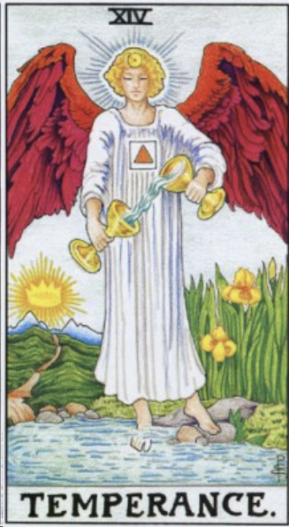
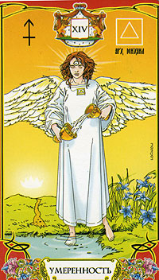
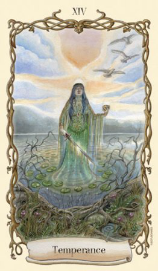
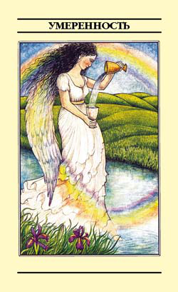
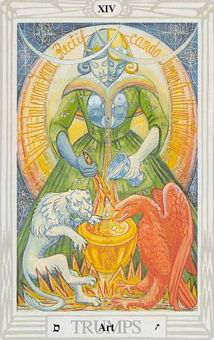
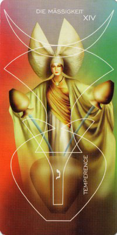
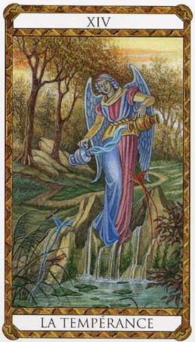
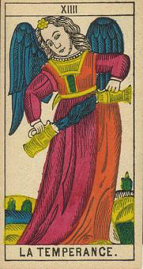
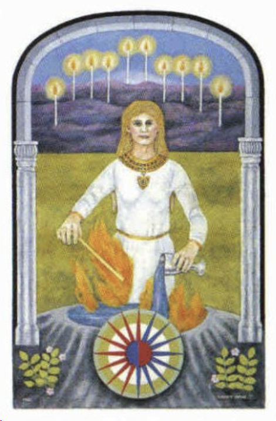
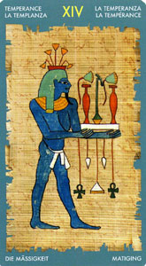
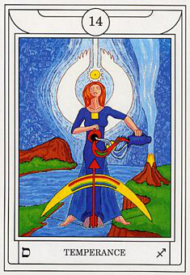
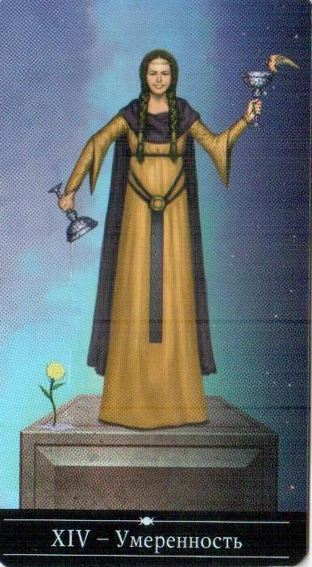
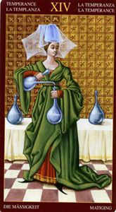
детали на карте:
Ангел (на других картах встречается женщина) с двумя чащами, переливает из одной чаши в другую жидкость. На лбу знак солнца - на груди треугольник (как вариант - стихия земли). Одна нога в воде, другая на суше, что может символизировать баланс, совмещение одного и другого. Этот аркан следует за 13. То есть трансформация из одного качества в другое. Ты умер для того мира, но рожден для этого.
цвет: синий-желтый, красный-синий, красный - желтый. Два цвета которые при смешении дают третий.
символ:
стрелочка (переход от одного к другому)
ощущения
Внутрянняя траснформация, когда кажется что выхода нет, потом вдруг что-то происходит (а на самом деле произошло что-то в тебе) и ситуация решается. Выход из тупика найден! Вселенная больше не сопротивляется, потому что убрано сопростивление в тебе. Внутрянняя работа, терпение, самоконтроль. События развиваются своим чередом, пока не пройдешь полностью все стадии от начала до конца ничего не будет. Карта терпения, монотонности, выдержки, осознования, что все идет своим чередом.
"Надо только выучиться ждать, надо быть спокойным и упрямым..." (А. Герман)
ключевые слова:
отпускание
завершение
конец циклов
неотвратимость конца
неотвратимость разложения до атомов
освобождение
очищение
удаление ненужного
Перевернутая карта:
Трудность в отпускании, трудность в завершении какого-то дела. То что надо отпустить очегь сложно отпускается.
запах:
земли, дерева, древесный мох
астрология:
Плутон
мифология:
Аид и разные с ним мифы (Орфей, Персефона)
Фразы:
Смерть - это лучшее изобретение человечества. Она - причина изменений. Она очищает старое, чтобы открыть путь новому. Стив Джобс
ритуал: поставить свечку за упокой души умерших. Вспоминание близких, которые отошли в мир иной.